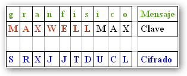
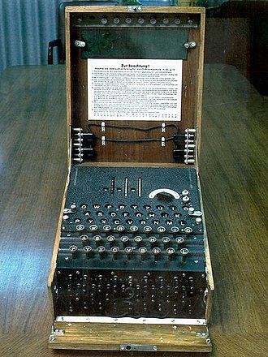

KEVIN YASSIR FUENTES GARCÍA
Estudiante de la Escuela Superior de Cómputo del Instituto Politécnico Nacional
Correo electrónico: kevincraftzombie@gmail.com
Educación Superior
Ingeniería en Sistemas Computacionales en la Escuela Superior de Cómputo del IPN
Sitio web ESCOM IPNPorcentaje completado: 75/100
Educación Media Superior
Técnico en Programación por el Centro de Bachillerato Tecnológico Agropecuario No. 39
Sitio web CBTA 39
Mi Curículum Vitae
Mis hobbies
Futbol Soccer
Juego fútbol los fines de semana con un equipo amateur
Posiciones: Medio Central, Defensa lateral
Atletismo y Running
Entreno carreras de 5k, 10k y 15k
Frecuencia: 3 a 4 veces a la semana
Calistenia
Practico calistenia con mis amigos
Frecuencia: 3 a 4 veces a la semana
Programación Competitiva
Me gusta resolver problemas de programación en plataformas online
Plataformas favoritas: OmegaUp, CodeForces
Frecuencia: 2 a 3 veces a la semana
Un poco de CRIPTOGRAFÍA ...
La criptografía es el arte y la ciencia de la comunicación segura. Su historia se remonta a miles de años atrás, cuando los antiguos egipcios utilizaron jeroglíficos y símbolos para ocultar el significado de sus mensajes. En la antigua Grecia, el famoso historiador Heródoto describió cómo los persas usaban tinta invisible para escribir mensajes secretos en sus cartas.

Durante la Edad Media, la criptografía se convirtió en una herramienta importante para los gobiernos y los militares, que necesitaban proteger sus comunicaciones de los enemigos. El cifrado de sustitución, que consiste en reemplazar cada letra de una palabra por otra letra del alfabeto, se convirtió en una técnica popular.
En el siglo XIX, la criptografía experimentó un gran avance con la invención de la máquina de cifrado de Vigenère, que utilizaba una clave para cifrar y descifrar mensajes. Sin embargo, la Primera Guerra Mundial llevó la criptografía a un nuevo nivel con el desarrollo de la máquina Enigma por parte de los alemanes, que utilizaban para cifrar sus mensajes militares.

Durante la Segunda Guerra Mundial, la criptografía jugó un papel fundamental en la victoria de los aliados, especialmente gracias al trabajo del equipo de criptoanalistas liderado por Alan Turing, que logró descifrar los mensajes cifrados de la máquina Enigma.

Después de la guerra, la criptografía continuó evolucionando con la aparición de los algoritmos de cifrado asimétrico, como RSA, que permiten la comunicación segura a través de redes de computadoras. Hoy en día, la criptografía se utiliza en una amplia gama de aplicaciones, desde la seguridad en línea hasta la privacidad de las comunicaciones gubernamentales y militares.
Mi llave pública
HOLA AMIGOS